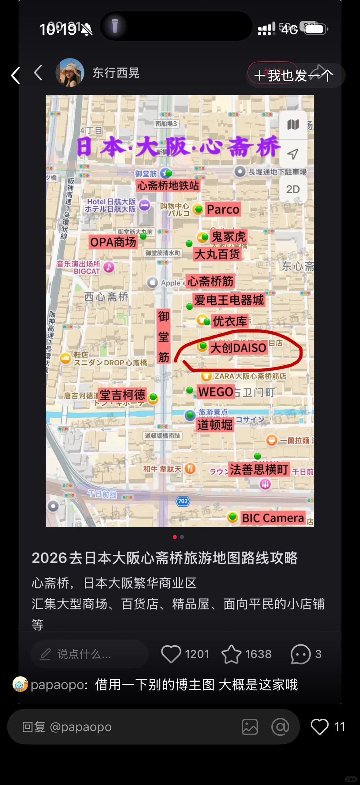

加载中…
大阪住4晚 → 京都中转 → 东京住2晚，示意图非精确比例
先看区域，再按当天午餐/晚餐进入；地图图片来自你提供的心斋桥路线图

机票 · 酒店 · 交通票券
点「路线」展开当天地图和一键导航
两人共享，完成一项就从列表消失
同一店铺当日消费满 5,000 日元（含税）即可退税，结账时出示护照，免税品会封装在专用袋子里，出境前不要拆封。机场也有电子退税单据核验闸机，出境安检前记得预留 10–15 分钟排队时间。
建议开通手机 Suica 或 PASMO，大部分商店、地铁、便利店都能刷。关西周游券和东京地铁 48 小时券都是各自区域的补充票，不能互相替代。
10月中旬大阪、东京日间气温约 20–24℃，早晚会降到 15℃左右，建议带一件薄外套或开衫，京都/奈良户外活动多，穿好走的鞋。